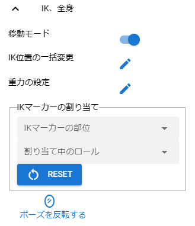
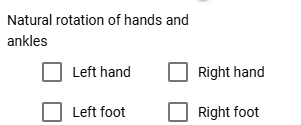
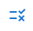
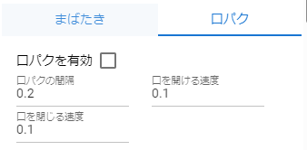
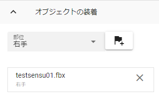
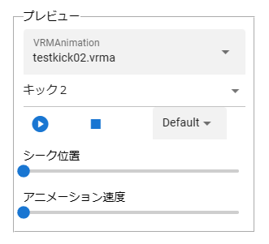

9.2. VRoid/VRM
This is a property that can be used with VRoid/VRM.
9.2.1. IK、Body
Properties related to IK (mechanism for manipulating each part of the VRoid/VRM body).
- Positioning mode:
Switch to the mode that moves and rotates the entire VRoid/VRM at once. You can also move and rotate each IK part while this is enabled.
- Natural rotation of hands and ankles:
Added in ver 2.10.0. When turned off, the rotation angle of the hands and feet while it was on will be saved in the IK marker. Fine rotation can be done afterwards.
- Left hand
Allow the left hand to rotate naturally from the left upper arm.
- Right Hand:.
Allow the right hand to rotate naturally from the upper right arm.
- Left leg:
Allow your left ankle to rotate naturally from your left shin.
- Right leg:
Allow your right ankle to rotate naturally from your right shin.
Hint
When either of these are turned on, unnecessary rotation operations after movement are unnecessary, resulting in more realistic movements. However, since finer control is not possible, they should basically be considered as auxiliary functions when creating motions.
- Batch change of IK position:
- IKマーカーの位置や回転を直接数値で指定したり、雛形となる動き方を選択して、一括で操作できるウィンドウを表示します。ver 2.13.0より、従来のスプレッドシート形式は 入力モード と命名しました。
スプレッドシート形式で入力するウィンドウを表示します。
 4種類の部位をそれぞれ選択するシンプルな形式のウィンドウを表示します。
各ウィンドウ内のUIについては Repositioning of IK markers を御覧ください。
- Gravity settings:
Set the gravity for the bones that VRM has as standard.
- Assign the IK marker:
Switch the VRM’s IK markers to another object.
- Assign the IK marker
- IK marker in body:
Select the part of the IK marker to be switched.
- Assigning role:
Select which objects to assign as IK markers for the selected part.
- Reset:
Reverts the IK markers back to their original markers.
- flip pose:
Reverses the current VRM pose.
9.2.2. Arm, Hand

Right hand left hand:
- combo box:
Switch between manual operation, open, normal, close, pointing, V sign, thumbs up, and grasp.
- Slider:
Specifies the degree of change of the pose specified in the combo box.
9.2.2.1. Manual operation
Introduced from ver 1.0.4. You can edit the pose of the palm in detail by rotating each finger of the hand.

When manual operation is selected, the UI will be displayed. The finger UI mimics a real palm and fingers.
9.2.3. BlendShape
This is an item for finely adjusting the facial expressions of the VRoid/VRM.

VRoid/VRM has two types of blendshapes. The Unity meaning and how to capture it in this application are classified as follows.
Unity |
VRM version |
This app(1.x) |
This app(2.x) |
|---|---|---|---|
SkinnedMeshRenderer |
0.x/1.x |
Generic |
Dedicated |
VRMBlendShapeProxy |
0.x |
Dedicated |
Deprecated |
VRM10RuntimeExpression |
1.x |
Dedicated |
Common |
The naming convention for the SkinnedMeshRenderer’s blendshapes is roughly determined as follows. Please note that the actual number varies depending on the character.
Key |
Description |
|---|---|
~Fcl_All_~ |
Move all facial parts |
~Fcl_BRW_~ |
Move eyebrows |
~Fcl_EYE_~ |
Move your eyes |
~Fcl_MTH_~ |
Move mouth |
~Fcl_HA_~ |
Move teeth |
~Other~ |
Move parts that do not apply to the above |
Note
For VRM made by VRoidStudio.
In this application, for the sake of clarity, the prefixes of the original blendshapes are all hidden. note that.
In addition, I think that it is easy to find blendshapes in other apps if you use the above as a mark.
Warning
Due to VRM 1.x specifications, Expression and BlendShape behave differently. See BlendShape for details.
With plain VRM1.x, the following BlendShapes tend not to work.
Emotions (Type where eyebrows, eyes, and mouth all move, such as Fcl_All)
mouth
etc
Since this application cannot determine which blend shape of which VRM is stuck, the function has been moved to the new method “Expression”. (with original repairs)
9.2.3.1. Automatic blink
Make the VRoid/VRM facial expressions blink automatically.

- Enable Auto Blink:
Toggles automatic blinking on and off. Default is on.
- Blink interval:
Blink at intervals of this number of seconds.
- Seconds to open eyelids:
Take this number of seconds to open your eyelids.
- Seconds to close the eyelids:
Take this number of seconds to open your eyelids.
- Time when eyelids are closed:
VRM has closed its eyelids for this few seconds.
9.2.3.2. Lip sync
VRoid/VRM keeps moving its mouth as if it is talking.
- Enable lip sync:
Enable lip sync.
aaautomatically changes from 0.0 to 0.5.- Lip sync interval:
Specifies the interval after which the mouth closes and before it reopens. Default is 0.5.
- Speed to open the mouth:
Specify the speed at which the mouth opens. Increases by this number every frame. Default is 0.03.
- Speed to close the mouth:
Specify the speed at which the mouth closes. It decreases by this number every frame. Default is 0.1.
9.2.4. wearing an object
This is a list of functions that link different objects with the movement of each part of the VRoid/VRM.
You can attach objects to the following parts of your body. There is no limit to how many you can wear.
- combo box:
Select the parts you want to equip.
- Equipment button:
Shows the attach object dialog.
- Current equipment column:
Unequip it with the delete button on the far right.
Hip, left thigh, right thigh, left lower leg, right lower leg, left leg, right leg
spine, chest, neck, head
Left shoulder, right shoulder, left upper arm, right upper arm
left forearm, right forearm, left hand, right hand, upper chest
- ID:
ID of the object.
- Type:
The type of object.
- Name:
The name of the object.
Select the object you want to equip and press the “OK” button to equip it.
9.2.5. Animation
VRMAnimations that are open throughout the app can be specified for individual VRMs. The behavior is equivalent to the animation of OtherObject.
- Motion file name:
This is a combo box that selects the currently open VRMAnimation file name. The first “—” cancels the selection.
- Animation clip name:
VRMAnimation can have multiple animation clips per file. This is a combo box for selecting the name of the clip contained within.
- Preview play/stop:
If animation is set, it will play/stop. The playback here is just a preview.
- Playback mode:
Select the animation playback mode from
Default,Loop, orPingPong.- Default:
Normal playback. It is played only once.
- Loop:
let it loop.
- PingPong:
Loop, but rewind the content of the animation like a toy yo-yo.
- Seek position:
Switch animation playback position. It will be reflected in your animation project.
- Animation speed:
Adjust the playback speed of the animation.
- Animation state (for registration):
Register the playback state in the animation project. Select one of the following from the combo box:
9.2.6. Texture

This is a property related to textures owned by VRM. If there are multiple textures or materials, you can select them from the combo box. The number of textures that can be detected depends on the actual VRM.
- Material name:
The name of the material held by the currently selected texture.
- Shader:
Switch the shader to Unity’s Standard, VRM’s VRM/MToon, or StandardAsset’s Water (FX/Water4).
You can change the settings of the following shaders. For details, please refer to Unity Help.
- Standard:
Color, Blend Mode, Metallic, Glossy, Emission Color, Texture
- VRM/MToon:
Colors, Blending Modes, Culling Modes, Metallic, Glossy, Emission Color, Shade Color, Shading Toony, Rim Color, Rim fresnel power, SrcBlend, DstBlend, Texture
- Water:
Fresnel scale, reflection color, specular color, wave amplitude, wave frequency, wave steepness, wave velocity, wave direction AB, wave direction CD
- Sketch:
Outline width、Stroke density、Add brightness、Mult brightness、Shadow brightness
- PostSketch:
Outline width、Stroke density、Add brightness、Mult brightness
- Comic:
enableTexTransparent, Line width, Color, Tone threshold
Hint
It is the same as setting the texture of OtherObject described later.
Caution
Some shaders are not suitable for VRM. Please use with caution as it may change differently than expected.